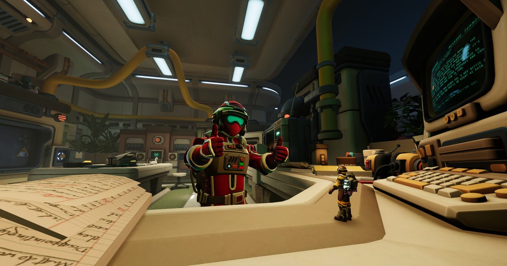

2026-10-20 · 独立游戏深读
今天（10 月 20 日），荷兰鹿特丹的 Total Mayhem Games 交出了系列的第五部正传 《我们曾到此：明日遗踪 / We Were Here Tomorrow》：Steam、PS5、Xbox Series X|S 同步，约 15 小时流程，19.99 美元，首日就开全平台跨平台联机。这是一条看起来很常规的发售新闻，但它藏着一件极不常规的事——官方把「一支能用的麦克风」写进了 Steam 的最低系统需求里。不是「推荐」，不是「建议开语音」，是和 Windows 11、8GB 内存、25GB 硬盘并列的硬需求。我第一次在商店页的系统需求区块看到麦克风这个词。这件事比 15 小时流程更值得拆。

《我们曾到此》系列的路子一直很野：2017 年第一部是免费的双人非对称解谜，两个人被扔进南极的 Castle Rock 城堡，各关各的房间，谁都看不到对方的屏幕，唯一的工具是一台对讲机。就这么一个简单的点子，一路长成了完整的系列：
新作的设定换了个彻底的方向：不再是冰封中世纪城堡，而是南极冰盖之下的一座叫 Norček Industries 的工业设施。两个 Explorer 从低温舱里醒来，记忆是碎的，只有一个自称主管的 Kathleen Bowe 通过广播给他们派活——她手下的研究团队失踪了，项目卡在临门一脚，全球危机在倒计时。美术是「八十年代人想象中的未来」：巨型主机、粗笨设备、亮色内饰、synthwave 配乐，两个人身穿一黄一红的宇航服，哪怕房间开始变得不对劲，你也能一眼分清谁是谁。叙事这次请来了畅销小说家 Claire North 参与，Steam 愿望单在发售前过了 35 万。
绝大多数游戏把语音当成外设：你可以开着 Discord 玩，也可以全程闭麦打字。系统需求那一栏通常只写 CPU、GPU、内存、硬盘、DirectX——全是「机器能不能跑」的问题。而《明日遗踪》往这一栏塞了一个「人能不能说」的条件。
这不是文案偷懒，是设计哲学被写进了硬件清单。它的核心机制是信息不对称：两个 Explorer 从出低温舱开始就被分开，各走各的区域，屏幕上没有任何对方能看到的东西。你面前是一墙会发光的转盘和倒计时的怪符号，你搭档那边是一间塞满手册、图纸和拉杆的控制室——你们各自只拿着答案的一半。把这两半拼起来，靠的就是嘴。
更要命的是它的对讲机是半双工的：一次只能有一个人按下通话键。你在慌的时候没法抢话，只能听完再说。这意味着「会说话」在这款游戏里不是软技能，是一条物理通道，和显卡一样属于能不能玩的前提。所以把它写进系统需求，逻辑是自洽的，甚至有点可爱——它等于在商店页最不浪漫的角落里，直白地告诉玩家：这不是一款游戏，这是一次考试。
系列一直有一个没说破的短板：太短。前几作 2–8 小时的体量，玩到刚默契起来就结束了。所以 15 小时这件事，粉丝盼了很多年，官方也拿它当主打卖点。
但 15 小时不是靠多堆谜题堆出来的。这一作给两个角色各配了一件专属高科技道具，而且可以在流程里升级：一件能改变物体的时间状态，另一件能实时锚定能量束，两件道具要跨房间互相配合才能过障碍。这是该系列第一次把「成长」放进流程。
这一步走得好不好，是这次发售真正的悬念。好处很直观：道具让两个角色的分工有了性格，谜题的排列组合不再只是「你说我听」；而且角色的道具视角不同，换边重玩就有理由了——你会发现自己在 A 视角下讲不清楚的东西，换到 B 视角居然顺嘴，纯解谜游戏里能找到可重玩理由的并不多见。
风险同样具体，而且有前车之鉴：2023 年外传《The FriendShip》加入了随机化元素，被老玩家批评「解法不再讲逻辑」。这次官方明确表示会回到正传强调的逻辑向合作解谜，但一套升级系统天然会稀释纯逻辑——当谜题可以被「更强的道具」绕过，它就不再是谜题了，只是一条进度条。这是我今天最想盯的一个点，也是唯一一个需要等发售后几天才可能看清的点。
很多人会把这次的美术转向理解成「哥特腻了，换个科幻皮」。我觉得没那么简单，它换掉的是不可靠叙述者的身份。
城堡里的秘密藏在禁忌图书馆、上锁的门和一个疯国王的喜怒里——那是古典的、命运式的恐惧，你没法追问，只能接受。而研究设施的秘密藏在分级文件、监控系统和一群「被叮嘱过不要多问」的雇员身上。区别在哪？城堡是不知道自己在干什么，实验室是清楚地知道。后者带来一种更现代的不适感：Kathleen Bowe 的声音永远是平静、自信、习惯被服从的，她讲的每一句都可能是真的，也都可能是流程的一部分。
这个替换还有一个实用收益：它终于给「为什么两个人必须分开」提供了动机。在城堡里，两人被分开多少有点像是游戏机制硬掰的；在一座企业级研究设施里，信息隔离本身就是制度。当你说服自己「这地方本来就在防着人互相通气」，谜题的正当性就立住了。
商店页写得很死：没有单人模式，没有离线战役，没有 AI 同伴。只有在线两人合作。有人会问，加个 AI 伙伴有多难？
其实加了就毁了。AI 要么秒答（那就不叫合作），要么慢吞吞像掉线的 NPC（那叫折磨），两种都会把「我讲不清楚—他听错了—我们吵一架—最后居然对了」这条情绪曲线抹平。而这条曲线才是这个系列真正的商品。
社区里每一代都会有人尝试「多开」——两台设备、两个账号、一个人双手各握一个手柄。社区的态度也一如既往地一致：别。理由很实在，你扭头看一眼第二块屏幕，信息不对称就没了，谜题的难度会掉掉九成；而且有些谜题要一个人在设施这头按住按钮、另一个人在那头限时穿迷宫，同一毫秒操作两个手柄，那是自虐不是玩法。
| 作品 | 合作靠什么 | 单人可玩 | 体量 |
|---|---|---|---|
| We Were Here Tomorrow | 纯信息不对称 + 口头描述，语音即输入设备 | 否 | 约 15 小时 |
| Operation: Tango | 不对称任务 + 沟通，但信息差更薄、节奏更快 | 否 | 约 5 小时 |
| 双人成行 | 能力组合为主，沟通是加分项不是前提 | 否 | 约 12–15 小时 |
| Portal 2 合作模式 | 物理谜题 + 双视角，逻辑硬、情绪软 | 单人另有战役 | 约 5 小时 |
| We Were Here Forever | 同系列上一作，纯沟通，但无角色成长 | 否 | 约 10–15 小时 |
看完这张表，它的位置就很清楚了：它是唯一一个把「说不清楚」当成核心难度、并且敢把这个难度撑到 15 小时的。双人成行的难点在操作，Portal 2 的难点在物理直觉，它的难点在语言表达本身——这也是为什么有人玩这个系列会真的吵起来。
我们的评分：8.2 / 10（首发设计完成度与期待值）
扣分项集中在还没法验证的部分：升级系统会不会稀释谜题的纯逻辑性，以及 15 小时的曲线在后半程会不会塌。加分项给「把麦克风写进系统需求」这一步的坦率——它把一款游戏真正的门槛写在最显眼的地方，不玩虚的。
我们的观察
这次的定价也很值得单独说一句。19.99 美元对应 15 小时，换算下来比《Forever》那一档要实惠，而且它是系列第一次以「正经买断小品」的姿态定价，而不是靠首作免费带流量。一个做了九年的系列，从免费走到 20 美元，还敢在包装上写「你必须开麦」，说明它对这套机制的信心是真的。
我们的观点
我认为这个系列最被低估的一点是：它把「沟通能力」变成了一种可以被游戏 measurable 的技能。你会在第三个小时发现自己描述一个三角形说不清楚，会意识到「你那边靠左」这句话里的「左」是谁的左，会在第七个小时突然建立起一套两人专用的黑话。这套黑话的成长曲线，是任何单人解谜游戏都给不了的。
我们的案例对比
同样是「合作解谜」，双人成行的解法是让两个角色拥有不同的能力——你会飞我会钻，合起来才能过，考验的是配合时机；《明日遗踪》的解法是让两个人拥有不同的信息——我们能力一样，但世界对我们各开了一半，考验的是表达精度。前者失败时你会说「你慢了半秒」，后者失败时你会说「你说的那个根本不是我看到的东西」。后者更容易引发真实争吵，但也更容易留下真实笑料。
我们的实验
编辑部建议在开工前做一次十分钟的「静默压力测试」：进游戏后，先约定不许说「左 / 右 / 上面 / 那个」这四个词，强制自己用「从你进门方向看的第二排第三个」「比你手里的表盘大一圈的那个」这类描述。十分钟下来，你会立刻知道自己是不是适合这款游戏——如果这十分钟你们俩都觉得累且有趣，那就放心买；如果觉得纯粹是折磨，那这 15 小时会非常长。
《我们曾到此：明日遗踪》最值得记住的不是 15 小时，也不是从城堡搬到南极冰下，而是它敢把「你能不能好好说话」写进系统需求表。在一个几乎所有游戏都在往单人化、静音化、可跳过一切的方向跑的时代，它反过来说：这款游戏的最低配置里，包含一个愿意跟你说话的人。这件事本身，比它卖出多少份更值得被记住。谜题质量、升级系统是否会稀释逻辑、后半程曲线是否守住，这些我们会在发售后的一周里继续盯。